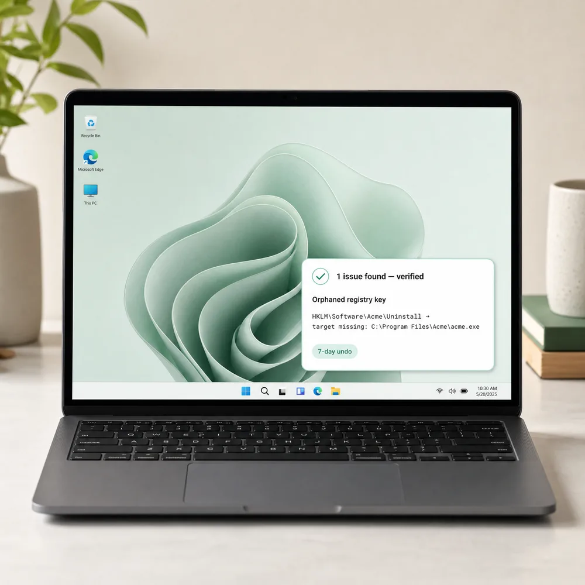

All-in-one PC care · v4.18.0
A PC cleaner that
shows its work.
Most cleanup tools invent an error count to scare you into upgrading. OptiGuard scans for specific, provable problems, cites the exact evidence for each one, and keeps a 7-day undo on everything it touches.

The market's default is to scare you first.
Independent reviews keep finding the same pattern: cleaners that flag thousands of "critical errors" that aren't real, then gate the fix behind an upgrade. Some "driver updater" tools are outright flagged as malware. OptiGuard was built as the opposite of that playbook.
"14,782 errors found — upgrade to fix"
A blind registry sweep flags anything that looks unused, with no evidence and no way to verify a single claim.
— reported pattern, PC-cleaner market review, 2026"18 entries — each cites the missing path"
Only registry entries whose install folder, uninstaller, or icon is verifiably gone from disk are flagged. Nothing else.
registry-cleaner.scan() → RegistryCleanerData.csEvery cleanup has a 7-day undo.
Nothing is deleted outright. Files move to a local quarantine with a manifest recording where they came from — one click restores a whole batch. A Windows System Restore Point is created automatically before higher-risk actions.
$ quarantine.log — bulk cleanup, 300 files
✓ batch 20260910_a3f1 created
✓ 300/300 files moved → quarantine/
✓ manifest written in 213ms (one write per batch, not per file)
$ undo last cleanup
✓ 300/300 files restored to original pathSeventeen tools, one dossier.
Organized the way you'd actually reach for them — not a flat list of forty icons.
Uninstall
Maintenance
Security & privacy
Insight
Some "features" we researched and refused to build.
Every omission below was a decision, not an oversight.
Run the scan. Read the evidence. Decide for yourself.
Free, no account, no telemetry. Everything stays on your machine.
Download OptiGuard →FAQ
Is my data sent to the cloud?
No. OptiGuard runs entirely on your PC. The only network calls are an optional update check and phishing-link heuristics — nothing about your files or installed programs is ever uploaded.
Does it need administrator rights?
Yes — registry and Program Files access require it. You'll see one UAC prompt each time it starts.
What happens to files it deletes?
They go to a 7-day local quarantine first, fully recoverable with one click. Nothing is gone for good by accident.
Will it break anything, like registry cleaners used to?
Registry Cleaner only flags entries with concrete proof their target no longer exists, and automatically backs up every change to a .reg file before removing anything.
Is it free?
Yes — no account, no upsells, no bundled software.
Automatic updates, no re-download.
OptiGuard checks GitHub for a newer version a few seconds after it starts (at most once per session, and you can turn it off in Settings). If one's out, you get a quiet, dismissible notification with a link to the release notes — nothing downloads or installs itself. For routine updates you just click through and confirm; no more digging up this page to grab a new installer by hand.